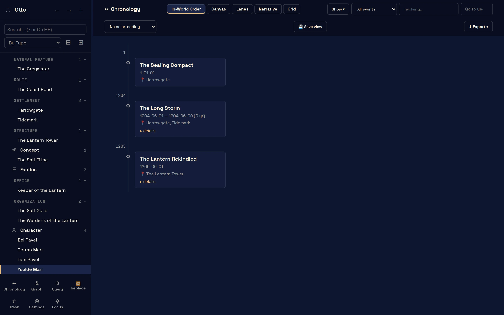
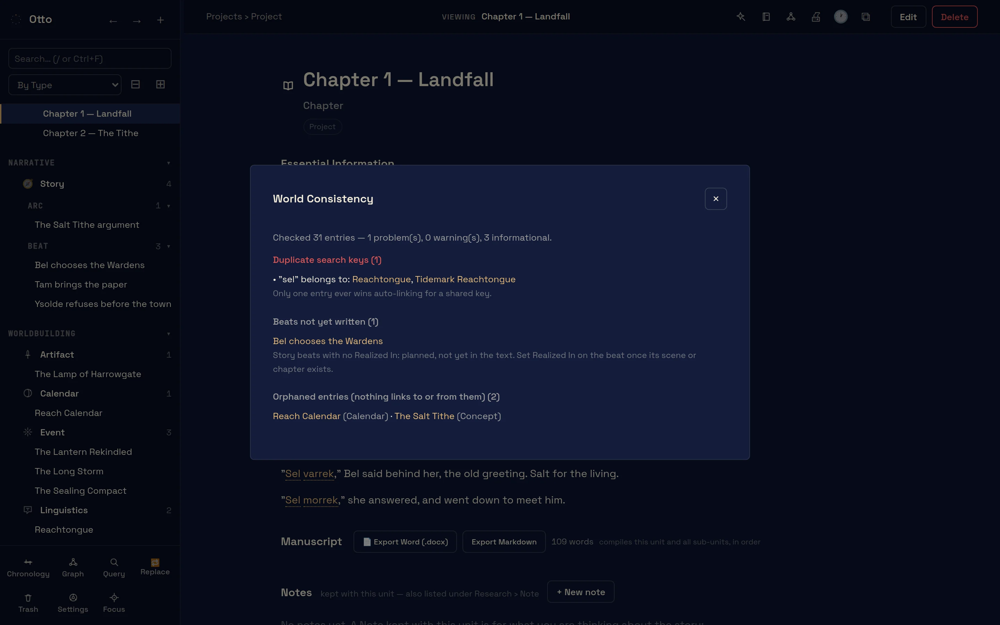

Five pictures of the actual program







How it is built, in plain words, so you can decide whether to trust it with ten years of work
i.It runs on your machine and nowhere else.
There is no account to make and no server for Otto to talk to. Nothing is sent anywhere. It works with the network cable out, on a train, in a cottage with no signal. Your whole world is one SQLite file1 that you can copy, back up, or carry to another computer on a stick.
ii.What you write stays yours, in a form you can read without me.
At any moment you can export the lot as plain JSON or Markdown: every entry, every link, every date. Before each update Otto sets a backup aside2, and every entry keeps its own version history, so last Tuesday’s draft of a chapter is still there. Updates change the program. They never touch what you wrote.
iii.The furniture stays where it is.
Otto comes with its own kinds of thing (people, places, factions, languages, calendars, events, artifacts, ideas) and those are fixed. Whatever you add goes alongside them: a form for ships, a category for minor gods. No update will rename your additions or take them away. I won’t rearrange the room while you’re out of it.
What’s inside
contents, in the order you’d meet them · numbers point to How it worksOtto is free while it is in beta: the whole program, with the sample world in it. When it is finished it will cost money, paid once, and the people who tested the beta will hear first.
From the changelog
- –Writing in two windows: Ctrl-click a chapter and it opens in writer mode in a second window; the world stays in the first.
- –Rest the pointer on a name while writing and a card shows who it is.
- –CSV import rebuilt for the current forms, with a template per form and a Belongs-to-project column; export query results back to CSV.
- –Nine new launch illustrations; the toolbar names the entry you’re on.
- –Notes kept with a project are listed under their book in the sidebar.
- –Foundational Lore on every Place, Artifact and Concept form.
- –Project is one form: the kind of unit (series, novel, chapter, scene) is its category.
- –Story arcs and beats, with Realized In linking a beat to the chapter that carries it.
- –Notes kept with a chapter, listed under it.